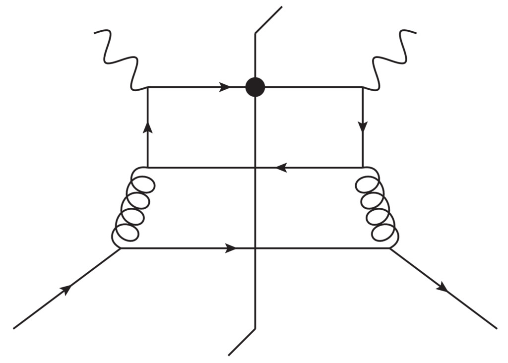
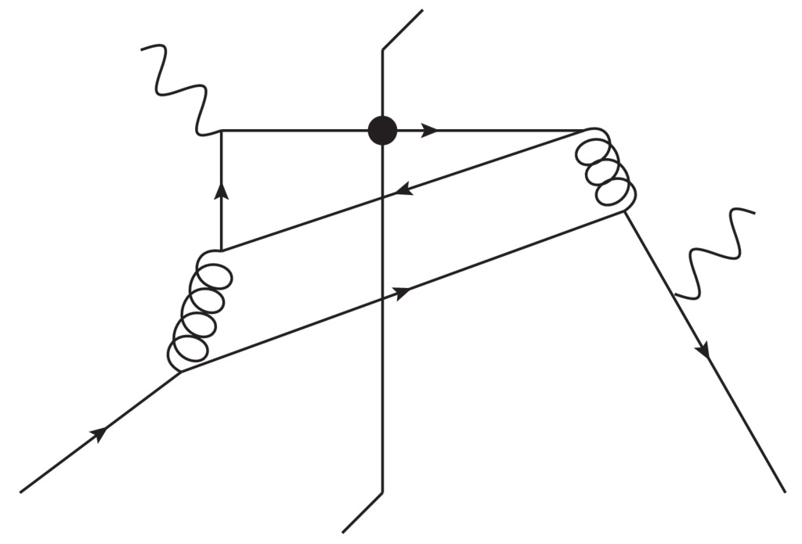

Tutorial¶
This documentation explains how to generate the SIDIS cross section:
in units of \({\rm GeV}^{-5}\). Here, \(p_{\rm T}\) is the produced hadron’s transverse momentum in the Breit frame and \(x,z,Q^2\) are the usual kinematical variables.
Getting started¶
- Install Anaconda with python2 in your system which you can get for free at https://www.anaconda.com
- Install lhapdf in your system.
- Open up a terminal. Below
$denotes the terminal prompt. - You will need to make lhapdf reachable from python. For that you need
to set the environment variables
PYTHONPATHandLD_LIBRARY_PATH. For bash it can be done as
export PATH=<path2lhapdf>/bin:$PATH
export PYTHONPATH=$PYTHONPATH:path2lhapdf/lib/python2.7/site-packages/
export LD_LIBRARY_PATH=<lhapdf>/lib
- Alternatively you can place these lines in your
.bashrcfile - Clone the repository from github
git clone git@github.com:JeffersonLab/BigTMD.git
- Go inside the repo directory
cd BigTMD
- Copy the folders
lhapdf/dsshpNLOandlhapdf/dsshmNLOinside to
<path2lhapdf>/share/LHAPDF/
- This will allow you to load DSS07 fragmentation functions from lhapdf
- Run the setup script (this takes some time)
./setup.py
- The script
sidis.pyorchestrates the full NLO calculation for a given kinematic point \(x,Q^2,z,q_{\rm T}=p_{\rm T}/z\) - Use
driver.pyas an example. You can run it simply like
./driver.py
Details¶
In the above, driver.py calls a function sidis.get_xsec from
sidis.py. In turn, sidis.py imports LO.py and the contents of
\(P_g\) and \(P_{pp}\) in the NLO directory. LO.py
contains the leading order cross section directly, while
\(P_g\) and \(P_{pp}\) contain all channels
and charge configurations for the next-to-leading order cross section.
(See citation for explanations of symbols, including
\(P_g\) and \(P_{pp}\).) These functions are of the form
The following table summarizes the various incoming and outgoing parton combinations for the virtual and real contributions.
| channel | virtual | real |
|---|---|---|
| 1 | \(\gamma^*+g \to(q\to h)+\bar{q}\) | \(\gamma^*+g \to(q\to h)+\bar{q}+g\) |
| 2 | \(\gamma^*+q \to(q\to h)+g\) | \(\gamma^*+q \to(q\to h)+g+g\) |
| \(\gamma^*+q \to(q \to h)+q'+\bar{q}'\) | ||
| 3 | \(\gamma^*+q \to(g\to h)+q\) | \(\gamma^*+q \to(g \to h)+q+g\) |
| 4 | \(\gamma^*+g \to(g \to h) +q +\bar{q}\) | |
| 5 | \(\gamma^*+q \to(\bar{q}\to h)+ q + \bar{q}\) | |
| 6 | \(\gamma^*+q\to(q' \to h)+q+\bar{q}\) |
The channels are organized such that IR singularities of the virtual
contribution matches with those from the real contributions. \(\gamma^*\) is the
virtual photon, \(g\) is a gluon, \(q\) and \(q\) denote different
quark flavors, and \(\bar{q}\) and \(\bar{q}'\) are the antiparticles
of \(q\) and \(q'\) respectively. \(f \to h\) means it is the
parton of flavor “math:f that hadronizes. For example,
refers to graphs with 3 unobserved real
emissions where a target quark leads to a hadronizing final state
gluon and an unobserved quark and gluon. The correspondence between
real and virtual graphs is in the sense of Table I of citation.
By charge configuration we mean whether the photon couples
directly to the charge of a target (anti)quark. A charge configuration
\(A\) is when the photon couples directly to the quark flavor in the
pdf,
{kind=link}
configuration \(C\) is when it does not,
{kind=link}
and \(B\) is an interference between two such cases. See Fig.``chgcon`` for examples.
{kind=link}